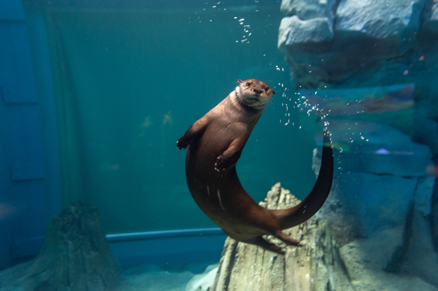

Professional Experience
- Corner Pub and Grill: September 2009- May 2011
- Busser/Barback
- Supported restaurant operations by promptly clearing tables, resetting them for incoming guests.
- Three Kings Public House: May 2011- January 2024
- Bartender/Server
- Created and served a wide range of beverages, maintaining a high level of customer satisfaction in a high volume environment.
- Managed cash transactions and upheld compliance with alcohol service regulations.
- Collaborated with the kitchen team to ensure seamless service delivery during peak hours.
- Bar Manager/Assistant GM
- Directed bar operations, managing inventory, and optimizing cost controls.
- Ensured compliance with all local liquor laws and regulations
- General Manager
- Demonstrated ability to lead and motivate a team of staff to ensure excellent customer service and satisfaction
- Proven track record of managing all areas of operations, including budgeting, staffing, and customer relations
- Skilled in recruitment, training, and development of staff, resulting in a highly motivated and productive team
Tech Learning
- LaunchCode
- Javascript Web Development Program
- Currently enrolled in an 8 month submersive Javascript Program
In January of 2024, I began my journey into the field of Tech, by getting accepted into LaunchCode and started a class on Javascript. Although this is when I started learning to code with a career in tech in mind, it was not the first time I had thought about making this move. I grew up fascinated by computers and began learning at an early age about how they worked from my mom. She worked at the IT desk at Washington University, and taught me much about computers. We even built our personal computer together at home.
As I grew older, and technology advanced rapidly, I was unable to keep up with technology as I graduated high school and went to college. There were so many other things to learn and do that I basically stopped thinking about a computer career altogether. It wasn't until about 6 years ago that I started to again think about a career change.
Personal Life & Hobbies
I enjoy spending time with my wife and 3 children. We love playing outside, going to
the park, and enjoying some of the many activities to do around St. Louis.
I also enjoy playing golf, going to Blues and Cardinals games, hiking and enjoying nature.
Here are a few of our favorite spots in St. Louis to visit:
- The St. Louis Zoo
- The Aquarium
- Missouri Botanical Gardens
- Powder Valley Conservation Nature Center
